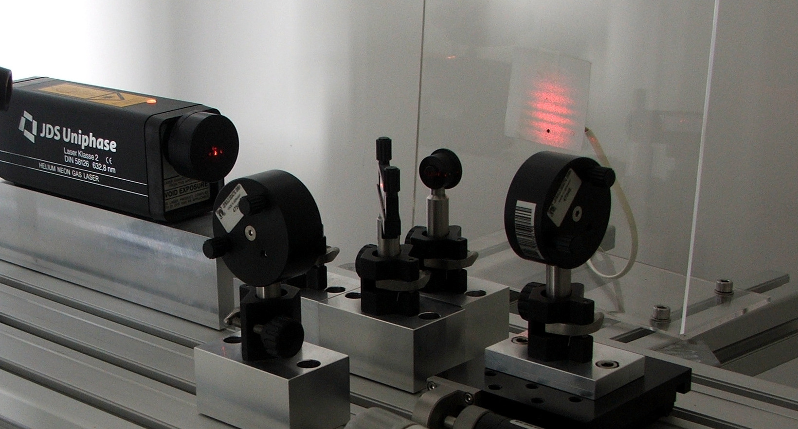
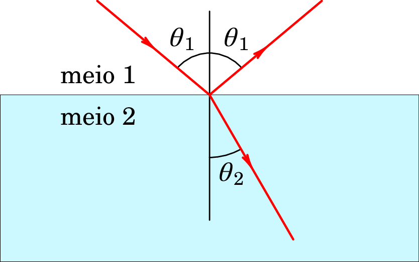
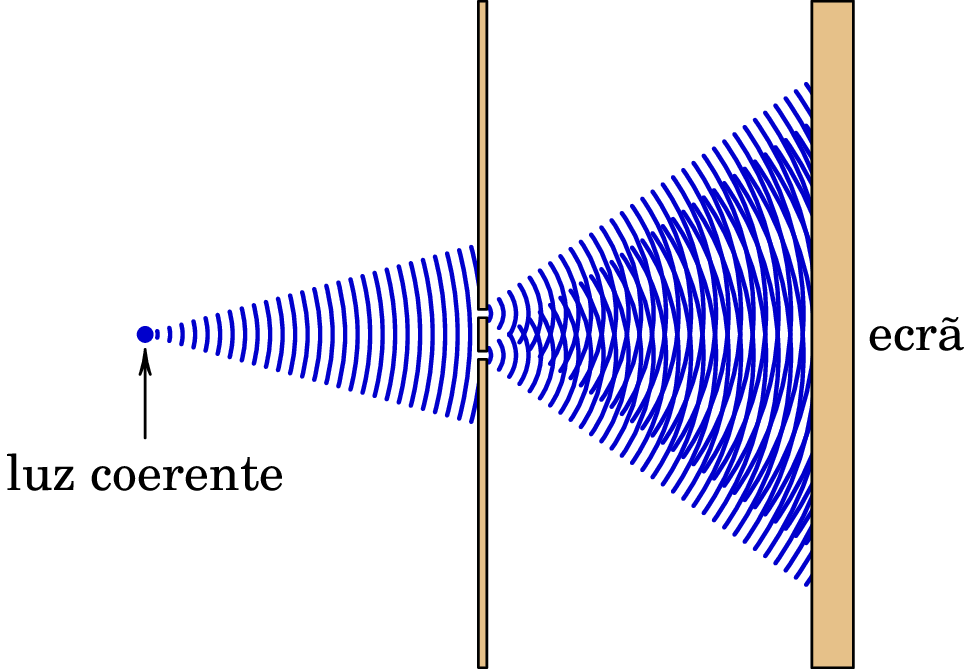
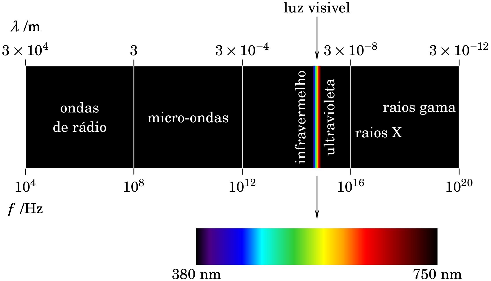
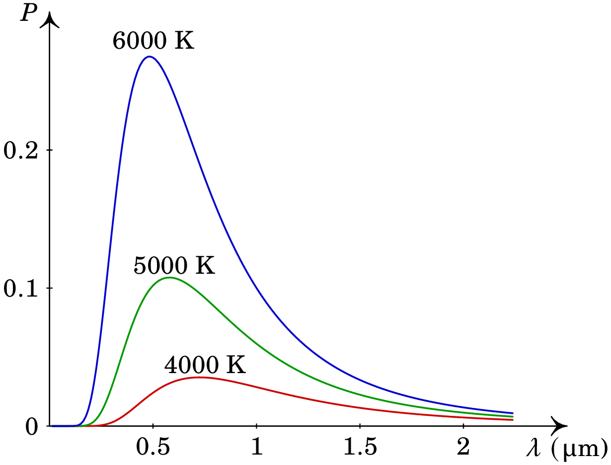
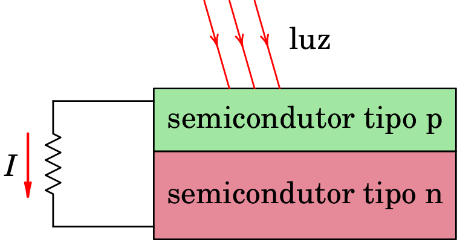
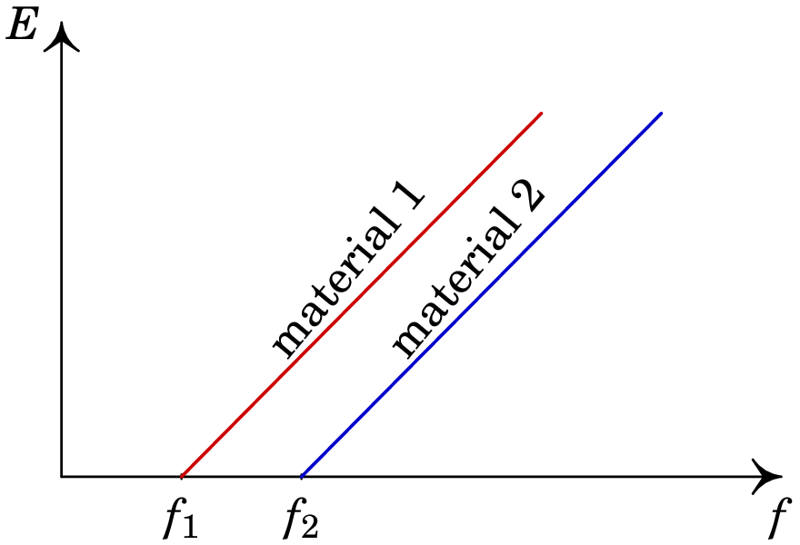
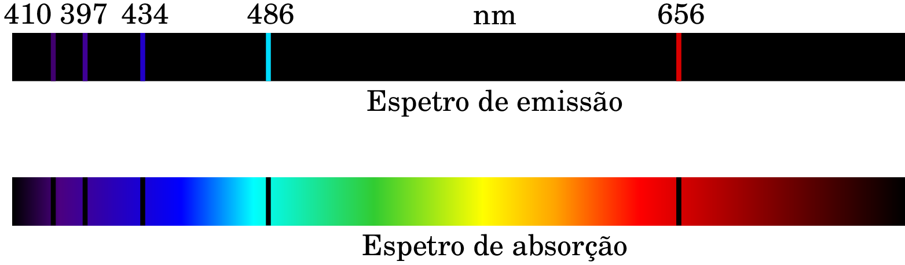
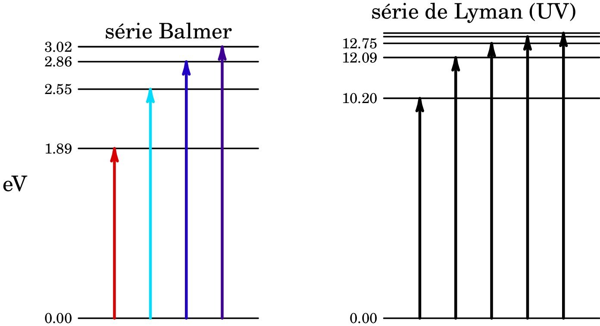
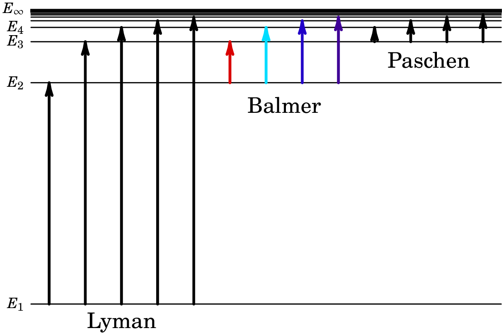

Jaime E. Villate.
Universidade do Porto, Portugal, 2026.

No início do século XIX ficou estabelecido, sem lugar a dúvida, que a luz é uma onda, porque quando dois feixes de luz interferem entre sim produzem riscas de interferência construtiva e destrutiva. Como as ondas conhecidas até então precisavam todas de um meio para se propagar, foi admitido que existia um meio invisível, o éter, onde as ondas de luz se propagam. A física do século XIX ficou marcada pelas muitas tentativas fracassadas de determinar a velocidade de esse hipotético éter. No fim do século chegou-se à conclusão que não existe nenhum éter; a luz propaga-se no vácuo. E no início do século XX descobriu-se que a luz é uma onda e também um conjunto de partículas —fotões— que é uma das evidências da necessidade de uma nova teoria da mecânica para explicar a luz e outros fenómenos microscópicos.
A velocidade de um raio de luz tem sido medida com precisão, e o seu valor, no vácuo é,
Num meio diferente do vácuo, a luz propaga-se com velocidade menor do que a sua velocidade no vácuo. Define-se o índice de refração de um material:
onde é a velocidade da luz nesse material. Como tal, será sempre maior que 1. O índice de refração do ar é aproximadamente 1.0003 e, como estamos a usar quatro algarismos significativos para as constantes, admitiremos que o índice de refração do ar é 1 (velocidade da luz no ar igual à velocidade da luz no vácuo).
Quando um raio de luz passa de um meio 1 para outro meio 2 como na figura 2.1, parte da luz é refletida no meio 1 e outra parte é refratada, passando para meio 2. O ângulo que o raio refratado faz com a perpendicular, , é diferente do ângulo que o raio incidente faz com a perpendicular à superfície de separação entre os dois meios, .

Mudando o ângulo , observa-se que a relação,
designada por Lei de Snell.
A reflexão e refração da luz foram explicadas por Newton, admitindo que a luz é composta por pequenas partículas que se deslocam todas à velocidade da luz (teoria corpuscular da luz). O raio refletido corresponde às partículas que batem com a interface entre os dois meios; se a colisão é elástica, a as partículas são refletidas com o mesmo ângulo de incidência. O raio refratado são as partículas que conseguiram penetrar no meio 2, onde a velocidade da luz é diferente. Admitindo que as partículas que penetram mantêm a mesma componente da velocidade paralela à interface dos meios, mas a velocidade total é diferente, explica-se a lei de Snell e o índice de refração é a relação entre a velocidade da luz no vácuo e no meio. Como tal, no caso da figura2.1 em que , a velocidade da luz seria maior no meio 2 do que no meio 1, mas na prática acontece exatamente o oposto.
Huygens, contemporâneo de Newton, acreditava que a luz era uma onda, tal como o som, que corresponde a vibrações de um meio invisível, o éter. Nessa teoria ondulatória da luz consegue-se explicar também as leis da reflexão e da refração da luz, e o índice de refração resulta ser a relação entre a velocidade da luz no meio e a velocidade da luz no vácuo. Na época de Newton e Huygens (século XVIII), não era possível medir a diferença da velocidade da luz no vácuo e em outros meios, tais como a água ou o ar, e o grande sucesso da mecânica de Newton fez com que fosse dada maior credibilidade á teoria corpuscular da luz, em favor da teoria ondulatória.
No início do século XIX Thomas Young (1773–1829) deu o golpe de graça à teoria corpuscular da luz, com a sua experiência de interferência da luz que passa através de duas fendas muito próximas (figura 2.2).

Se a luz fossem partículas, esperava-se que após a passagem pelas duas fendas, a maior parte delas chegassem ao ecrã próximas dos dois pontos exatamente em frente das duas fendas. No entanto, o que se observa são várias franjas claras e escuras no ecrã, que é um padrão de interferência caraterístico das ondas. Na figura 2.2 são visíveis essas zonas claras e escuras no ecrã. Nas zonas claras encontram-se as frentes de onda das duas ondas provenientes das duas fendas, produzindo interferência construtiva. Nas zonas escuras, uma frente de onda de uma das duas ondas (máximo) encontra-se com um ponto meio entre duas frentes de onda da segunda (mínimo), produzindo interferência destrutiva. O mesmo padrão de interferência é observado entre ondas de outros tipos, por exemplo, as ondas na superfície de um líquido, e a medição da distância entre as zonas claras e escuras permite determinar o comprimento de onda.
Ficou estabelecido que a luz era uma onda, e não composta por partículas como pensava Newton. Mas tarde, a meados do século XIX, James Maxwell demostrou que as equações do eletromagnetismo conduzem à possibilidade da existência de ondas eletromagnéticas: campos elétrico e magnético que se propagam em alguns materiais ou até no vácuo. A velocidade dessas ondas era dada em função das constantes elétrica e magnética, e o valor obtido coincide exatamente com a velocidade da luz no vácuo. Maxwell acreditava que a luz seria então uma onda eletromagnética; mas faltava mostrar que de facto era possível produzir ondas a partir dum sistema elétrico.

A primeira pessoa a conseguir produzir ondas eletromagnéticas no laboratório foi Heinrich Hertz, em 1877, oito anos após a morte de Maxwell. A partir de então foi possível realizar experiências com ondas eletromagnéticas e corroborar que têm as mesmas propriedades da luz. O espetro de ondas eletromagnéticas (figura 2.3) inclui vários tipos de ondas, e luz visível é a parte do espetro com comprimentos de onda entre 430 THz e 750 THz (comprimentos de onda entre 697 nm e 400 nm).
No fim do século XIX parecia ter sido resolvido o problema da natureza da luz, em favor da teoria ondulatória. No entanto a teoria ondulatória não conseguia explicar dois fenômenos: a radiação do corpo negro e o efeito fotoelétrico
Um objeto aquecido produz luz. Se a temperatura não for muito elevada, a luz produzida não é visível mas está na região do infravermelho. Quando a temperatura aumenta, a luz passa a ser vermelha, e a temperaturas ainda maiores é praticamente branca. A luz que o objeto produz é realmente uma sobreposição de diferentes frequências que variam de forma contínua numa região do espetro eletromagnético.
Esse tipo de radiação é designado por radiação do corpo negro. A
combinação da termodinâmica, que explica a relação entre a temperatura
e a vibração das moléculas, junto com a teoria eletromagnética, que
explica a produção de ondas eletromagnéticas por partículas com carga
elétrica quando vibram, prevê que quase todo a luz produzida estaria
na região do ultravioleta. Na prática o que se observa
experimentalmente (figura 2.4) é que o
espetro tem um máximo num comprimento de onda que depende da
temperatura do corpo, e decresce na região do violeta. O fracasso da
explicação teórica ficou conhecido como
catástrofe do violeta.

Max Planck trabalhou intensamente nesse problema, que implicava realizar alguns integrais em função da energia de oscilação das moléculas. Observou que quando aproximava esses integrais por somas em intervalos finitos de energia, o resultado era mais parecido ao espetro observado experimentalmente. Mas quando diminuía o tamanho dos intervalos, aparecia a catástrofe do violeta.
Em 1900 Planck postulou que a energia que as moléculas dum corpo podem libertar, devido à sua oscilação térmica, varia em múltiplos de um quantum de energia:
onde é a constante de Planck, com valor,
e é a frequência de oscilação. Com esse postulado, Planck conseguia reproduzir de forma precisa o espectro observado experimentalmente.
Em 1905 Albert Einstein publicou um artigo em que argumenta que assim como um gás e outros tipos de matéria são considerados como um número finito de partículas, embora em número muito elevado, o campo eletromagnético, e em particular a luz, deveriam ser consideradas como um sistema discreto de partículas.
Einstein reconhece o grande sucesso da teoria ondulatória da luz para explicar os fenómenos da ótica, e não pensa que essa teoria deva ser abandonada, mas reconhece que as experiências de ótica têm a ver com valores médios no tempo e não com valores instantâneos, onde o caráter discreto da luz é mais importante e a teoria ondulatória falha.

Um desses experimentos que não pode ser explicado pela teoria eletromagnética da luz é o efeito fotoelétrico, que consiste na emissão de eletrões em alguns metais quando são atingidos por luz, e que constitui a base das células fotovoltaicas em que a luz é usada para produzir energia (figura 2.5).
A velocidade dos eletrões libertados no efeito fotoelétrico não aumenta com o aumento da intensidade da luz, mas sim com o aumento da sua frequência; o aumento da intensidade da luz faz aumentar o número de eletrões mas não a sua velocidade. De facto, para cada material existe uma frequência por baixo da qual não se produz efeito fotoelétrico, independentemente da intensidade da luz. É como se tivéssemos um tsunami, com muita energia, que não produz nenhum dano num prédio, enquanto uma onda com amplitude e energia muito baixas, mas com frequência maior, destrói o mesmo prédio.
Einstein admite que a luz é formada por partículas, os fotões, e que a energia de cada fotão é igual à frequência vezes a constante de Planck: . O quantum de energia é o mesmo que foi considerado por Planck para explicar a radiação do corpo negro, mas agora não se trata apenas da energia libertada ou absorbida pelo corpo negro, mas a própria onda eletromagnética tem energia quantizada num número discreto de fotões.
A explicação dada por Einstein para o efeito fotoelétrico é que para libertar um eletrão no material, atingido por um fotão, a energia do fotão deverá ser superior à energia de ligação dos eletrões no material, , designada por função de trabalho do material. O eletrão libertado terá energia cinética igual à diferença entre a energia do fotão absorvido, , e a função de trabalho:
isso explica porque existe uma frequência mínima para que ocorra o efeito fotoelétrico, e essa frequência mínima é igual à função de trabalho do material, dividida pela constante de Planck: .
Após o artigo revolucionário de Einstein foram realizadas mais experiências para estudar o efeito fotoelétrico. Numa dessas experiência mediu-se a energia com que são emitidos os eletrões, em função da frequência da luz, com resultados como os que mostra a figura 2.6.

Com os resultados da figura 2.6 é possível corroborar que o declive da reta obtida para qualquer material fotoelétrico é exatamente igual à constante de Planck, tal como previa a equação (2.6). Hoje em dia, com uma célula fotoelétrica tal como a da figura 2.5 é possível reproduzir o gráfico 2.6, medindo a força eletromotriz da célula, usando luz com frequência que possa ser alterada, e multiplicando pela carga elementar para obter a energia dos eletrões emitidos.
Uma vez aceite, o conceito de fotão permitiu explicar muitos outros fenómenos bem conhecidos mas até então ignorados por não poder ser explicados pela teoria eletromagnética de Maxwell (fotoluminescência, calores específicos e até fotoquímica). A luz é assim caraterizada por uma dualidade onda-partícula: é produzida e absorvida em pacotes discretos de energia (fotões), mas o transporte dessa energia através do espaço é feito através de uma onda.
Mais tarde veio a descobrir-se que os eletrões, neutrões e outras partículas possuim também a dualidade onda-partícula. A pesar de serem consideradas partículas, exibem também fenómenos ondulatórios, tais como difração e interferência.
Nos tubos de descarga elétrica, o gás dentro do tubo produz luz; a energia das colisões de eletrões e iões com o gás transferem energia para os átomos, que é logo libertada na forma de luz. De acordo com a teoria dos fotões, a energia é libertada pelos átomos do gás em fotões com energia , proporcional à sua frequência . A análise espetral da luz produzida pelo tubo mostra que todos os fotões têm apenas umas poucas frequências discretas, caraterísticas de cada tipo de átomo. A parte superior da figura 2.7 mostra o espetro de emissão do hidrogénio, que é a decomposição espetral, nos diferentes comprimentos de onda, da luz produzida por um tubo de descarga com hidrogénio.

De forma análoga, quando luz branca, com todos os comprimentos de onda no espetro visível, atravessa um gás de hidrogénio, os átomos de hidrogénio absorvem os mesmos comprimentos de onda no espetro de emissão, como pode ver-se na parte inferior da figura 2.7 (espetro de absorção), que é a decomposição espetral da luz após a passagem pelo gás; as riscas pretas indicam os comprimentos de onda dos fotões que são absorvidos pelo hidrogénio.
As riscas nos espectros de emissão ou absorção são como a "impressão digital" dos diferentes átomos. Têm sido usadas para determinar os elementos que compõem as estrelas, através da análise espetral da luz que emitem. Os comprimentos de onda, , no espetro do hidrogénio da figura 2.7 são obtidos por meios óticos, e permitem-nos determinar as energias dos respetivos fotões:
Substituindo a constante de Planck e a velocidade da luz no vácuo, e dividindo a energia obtida pelo valor da carga elementar ( C), para expressar essas energias em eletrão-volts, obtêm-se os valores: 3.02 eV, 2.86 eV, 2.55 eV, 1.89 eV. Valores esses que devem corresponder à diferença entre a energia inicial do átomo e a sua energia após absorver um fotão com o respetivo comprimento de onda. O lado esquerdo da figura 2.8 mostra a relação desses níveis de energia, arbitrando a energia inicial igual a 0.

Outras series espectrais foram descobertas para o átomo de hidrogénio, nas regiões ultravioleta e infravermelha do espetro. A figura 2.8 mostra a série na região visível do espetro, designada por série de Balmer, e a série na região ultravioleta, designada por série de Lyman. Observe-se que a diferença entre o segundo e terceiro níveis de energia na série de Lyman é exatamente igual à diferença entre os dois primeiros níveis na série de Balmer, e as outras 3 diferenças entre níveis de energia consecutivos na série de Balmer também corresponde a diferenças de energia entre níveis consecutivos na série de Lyman. Podemos assim representar os níveis das duas séries no diagrama comum da figura 2.9, onde encaixa também a série espetral no infravermelho (série de Paschen).

Conclui-se que as séries do espetro de absorção correspondem à passagem dos átomos de hidrogénio do seu nível mais baixo de energia, para niveis superiores, (), após absorverem um fotão de energia igual . Os átomos podem primeiro absorver um fotão, passando do nível para o nível , e a seguir absorver outros fotões com energias (), dando origem à série de Balmer, na região visível do espetro.
Os níveis com energias superiores aproxima-se dum valor , que deverá ser a energia máxima que pode absorver o átomo até se desfazer. Como tal, corresponde ao estado em que a energia de ligação do átomo é nula, e arbitrando , observa-se que nos outros níveis a energia de ligação do átomo segue a seguinte sucessão aritmética simples:
onde é um número natural ,…, e é a constante de Rydberg, com valor:
Em 1913, Niels Bohr conseguiu explicar a sucessão dos níveis energéticos do átomo de hidrogénio, usando um modelo muito simples. Como o núcleo do átomo de hidrogénio (um protão) tem raio 5 ordens de grandeza menor do que o átomo, e massa aproximadamente 2000 vezes maior que a massa do eletrão, no modelo de Bohr admite-se que o núcleo é uma carga pontual fixa no centro do átomo, e o eletrão é outra carga pontual numa órbita circular à volta do núcleo, mas só pode estar em algumas possíveis órbitas. Cada nível de energia corresponde à energia do eletrão numa dessas órbitas. Bohr consegue reproduzir a expressão (2.8) admitindo apenas que o integral da quantidade de movimento do eletrão ao longo da órbita deverá ser um múltiplo inteiro da constante de Planck:
A condição de quantização (2.10) conduz também aos raios das possíveis órbitas do eletrão:
em que , designado por raio de Bohr, é igual ao raio da órbita mais próxima do núcleo, com valor,
que coincide com o valor estimado experimentalmente para o raio de um átomo de hidrogénio. O átomo só absorve ou emite fotões com níveis discretos de comprimentos de onda, porque pode sofrer transições apenas entre as possíveis órbitas com níveis discretos de energia.
A conclusão dos fenómenos descritos nas secções anteriores é que a física clássica consegue explicar os casos em que a escala de energias é elevada, por exemplo, da ordem dos joule. Quando a transferência de energia é da ordem dos eletrão-volt, essa transferência só pode acontecer em níveis discretos, e estaremos no domínio de uma nova física, a física quântica. Vários modelos quânticos foram propostos para reproduzir os resultados de diferentes experiências, e uma teoria consistente que explica todos esses fenómenos foi proposta por Max Born e outros físicos, em 1925.
Antes de proceder a explicar os fundamentos dessa teoria, é conveniente fazer uma revisão da álgebra de números complexos, e da teoria das probabilidades, que são dois ingredientes importantes nessa teoria.
2.1 Usando a condição de quantização de Bohr, equação (2.10), encontre as expressões dos raios e energias das órbitas circulares do eletrão no átomo de hidrogénio, e determine os valores do raio de Bohr e da constante de Rydberg.
Resolução. A força centrípeta responsável pelo movimento circular do eletrão é a força elétrica entre o protão e o núcleo, dada pela lei de Coulomb:
em que é a carga elementar e a constante de Coulomb. Igualando essa expressão à massa do eletrão, , vezes a sua aceleração centrípeta, encontra-se a seguinte relação entre a velocidade e o raio do eletrão:
O produto escalar no integral (2.10) é igual ao módulo da velocidade, , que é constante na órbita circular, vezes o comprimento de arco, ds, da órbita circular. A condição de quantização (2.10) conduz a uma relação entre os valores discretos de e :
onde é igual à constante de Planck dividida por , com valor:
Substituindo na equação (2.13), obtém-se a expressão dos raios da possíveis órbitas:
e, como tal, a expressão do raio de Bohr é:
e com os valores da constante de Planck, massa do eletrão, constante de Coulomb e carga elementar, obtém-se o valor dado na expressão(2.12).
A energia mecânica do eletrão é a sua energia cinética mais energia potencial elétrica:
onde foi usada a relação (2.13). Substituindo a expressão (2.15) do raio no nivel , obtém-se a energia do nível :
e usando a expressão (2.16) do raio de Bohr, obtém-se a expressão da constante de Rydberg:
que, em unidades de eletrão-volt, é igual a eV.